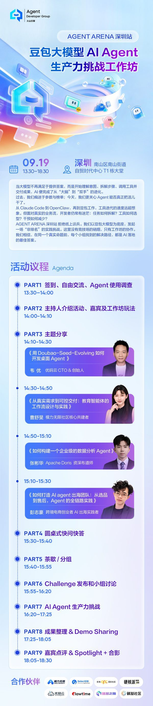

BAY AREA AI CALENDAR / VOL.001
湾区AI日历
找 AI 活动，认识 AI 圈的人
深圳场 · 2026.09.18 — 09.21 · 每周更新
编者按：《湾区AI日历》第 1 期。本周（9/18–9/21）深圳 7 场 AI 活动在线，从免费工作坊到百人峰会，覆盖 AI Agent、云原生架构、智能制造、智能体落地、跨境电商五条线。周六一天 5 场同开，其中两场免费但需审核——审核要走工作时间，今天不动手，明天大概率就来不及了。
今天是 9 月 18 日，周五。
我把自己收录的深圳场次全部过了一遍。本周（9/18–9/21）深圳还有 7 场活动在线，从免费工作坊到百人峰会都有，覆盖 AI Agent、云原生架构、智能制造、智能体落地、跨境电商五条线。
本周的关键词是报名截止。周六一天挤了 5 场，其中两场免费但需要审核——审核要走工作时间，今天不动手，明天大概率就来不及了。
下面按「报名紧迫度」排，越靠前越建议今天就把名报掉。
01_周六·五场同开
周六这一天的密度有点夸张——5 场活动挤在同一天，而且时间上互相重叠，基本上你只能挑一场去。所以先看下面这张时间对照，再决定报哪个。
| 时间 | 活动 | 费用 | 报名 |
|---|---|---|---|
| 13:30–18:30 | Agent Arena 豆包大模型 AI Agent 工作坊 | — | 活动行 |
| 13:00–18:00 | 智说论坛 · AI 赋能智能制造 | 免费 | 活动行 |
| 14:00–18:10 | 腾讯云架构师沙龙 · AI 与云原生架构 | — | 腾讯云官网 |
| 14:00–18:00 | AI × Web3 开发者与产业创新交流会 | 免费 | Luma |
| 全天 | BAYTECH 2026 国际湾区创科节 | — | 官网 |
Agent Arena 深圳站 · 豆包大模型 AI Agent 生产力挑战工作坊

官方长图海报 · 已截取头部，点击图片查看完整议程
📅 9/19（周六）13:30–18:30
📍 南山区自贸时代中心 T1 栋 26 楼云展厅
🎫 报名：活动行官方页
▪ 一句话点评：
这场是我最推荐的一场。不是因为它名气最大，而是它的形式最「有产出」：上午 4 位一线实践者做主题分享，覆盖桌面 Agent 开发、教育智能体工作流、企业级数据分析 Agent、AI Agent 出海团队的全链路实践；下午直接进 Challenge 环节——现场组队，解决真实场景问题，最后 Demo 展示 + 嘉宾点评。
这个「分享 + 动手 + 展示」的三段结构，在深圳的 AI 活动里不算多见。多数工作坊讲完就散了，这个至少能让你带走一个当天做出来的东西，以及一起熬过一下午的队友。
2026 智说论坛 · AI 赋能智能制造企业的转型升级

湾区AI日历信息海报 · 官方海报待补，以主办方发布为准
📅 9/19（周六）13:00–18:00
📍 龙岗区（报名审核通过后告知）
🎫 免费｜报名：活动行（审核制）
▪ 一句话点评：
这场在深圳做制造业、或者想找制造业客户的人，性价比最高。主办是深圳市智能化学会，腾讯云联合主办。主题很聚焦：AI 怎么在制造企业里真正落下去。形式是主题演讲 + 圆桌讨论，来的多是行业专家和龙头企业代表——说白了就是认识甲方的地方。
免费。但注意是审核制：地点在龙岗，报名审核通过后才告知具体地址。审核要时间，这也是我说要今天报的原因之一。
腾讯云架构师城市沙龙 · AI 和云原生架构方案研讨

主办方官方海报 · 点击查看大图
📅 9/19（周六）14:00–18:10
📍 腾讯大厦 411 会议室
🎫 报名：腾讯云官网
▪ 一句话点评：
如果你偏技术底层，这场可能是周六最「硬」的一场。腾讯云架构师技术同盟的成员带来 6 个真实业务案例，而且每个案例分享之后都有观察团现场点评——等于每个案例都有第二视角的拆解，不是单向输出。案例覆盖 AI 客服平台架构演进、配置驱动的多方系统集成、无人环卫云平台选型、智算底座工程实践、AI Coding 与 DDD 的落地取舍，以及 FDE 数字员工实战。
共 16 个议程段、8 位讲者。
AI × Web3 开发者与产业创新交流会 · 深圳站

主办方官方海报 · 点击查看大图
📅 9/19（周六）14:00–18:00
📍 深圳（报名进群后通知）
🎫 免费｜报名：Luma
▪ 一句话点评：
免费，而且话题踩在两个热点的交叉口上。现场重点讨论五件事：AI Agent 怎么真正进入企业业务（RAG、MCP、企业知识库、Agent 工作流与 Agent SaaS 的落地路径）；Web3 接下来还有哪些真实机会（钱包、RWA、PayFi、DeFi、稳定币、应用链与基础设施）；Web2 开发者怎么转 AI / Web3；以及 AI × Web3 能长出什么新东西。如果你正在考虑转型方向，这场的信息密度值得花一下午。共 11 个议程段。
一个细节：报名时记得备注「9月19日深圳活动」，审核通过后拉进群，具体地址在群里通知。
BAYTECH 2026 国际湾区创科节

主办方官方海报 · 点击查看大图
📅 9/19–9/20（周六–周日）
📍 河套深港科技创新合作区 · 河套科创中心 D 栋
🎫 报名：官网
▪ 一句话点评：
这是周六唯一一场跨周末（9/19–9/20）的活动，也是规模最大的一场。核心理念是 Build（真实构建）· Connect（全球连接）· Deploy（产业落地），采用「会 + 展 + 黑客松 + 投融资论坛」的融合模式：全球科创大会集结高校校长、科创创始人、科技大厂高管与一线投资人，设人工智能、具身智能、AI for Science、AI+产业四场平行主题论坛；同期还有国际科创成果展（人形机器人、大厂 AI 新品、工业级 AI 应用）和一个 24 小时黑客松。主办是粤港澳大湾区青年总会和国际湾区高校联盟。
划重点：BAYTECH 因为跨两天，是周六 5 场里唯一不用纠结时间冲突的——如果你既想参加黑客松又想听论坛，它给了你周日的余量。
02_周日·百度大会
百度智能云超级智能体大会 · 深圳站
官方日程长图 · 已截取主论坛部分，点击图片查看全部
📅 9/20（周日）09:00–18:00
📍 深圳湾万丽酒店三层大宴会厅（科技南路 18 号 A12 栋）
🎫 免费（席位有限）｜报名：活动行
▪ 一句话点评：
周六没排上的话，周日这场是另一个高价值选择。BAIDU AGENT SUMMIT，免费，规模不小。上午主论坛解读智能体进入真实业务场景的趋势与路径，并发布「百度搭子」的重磅升级与 Agent API 开放生态；下午设 AI+硬件、AI+康养两场平行专题论坛，以及百度搭子实训营，覆盖具身智能、陪伴机器人、智能商业、语音戒指等方向。共 10 个议程段、8 位讲者。
免费的大会里，这种规格的通常是报满即止。
03_周一·跨境峰会
领星跨境电商峰会

主办方官方海报 · 点击查看大图
📅 9/21（周一）10:00–18:00
📍 深圳前海国际会议中心
🎫 邀约制，席位有限｜信息页：雨果跨境
▪ 一句话点评：
面向做跨境的人。主题是「AI 浪潮下的经营进化与全球增长新路径」，只聚焦一条主线——用 AI 真正创造价值：从头部卖家掌舵人的实战拆解，到 AI 在企业经营中的落地；从营销财税全链路打通，到拉美、东南亚新市场布局。用四个维度回答跨境卖家最关心的两个问题：怎么增长、去哪增长。规格很高：11 个议程段、13 位讲者，含领星 CEO 付博、SHEGLAM 亚马逊负责人、腾讯云出海行业生态专家等。
但这场是邀约制，不是开放报名。需要联系领星客户经理，或扫描主办方官方海报二维码锁定席位。我把它列进来，是因为它确实是本周深圳含金量最高的场次之一——如果你的工作跟跨境沾边，值得花十分钟找找有没有领星的对接人。
04_为什么是「今天」
每次整理这种清单，我都会注意到同一件事——报名截止总是比大家以为的早。原因有三个，都挺实际：
▪ 第一，审核制需要时间。
智说论坛要审核通过才告知地址，AI × Web3 要审核后拉群。这些流程不是你点了报名就结束，主办方要处理，而处理需要工作时间。周六早上报名、指望下午能进场，风险很大。
▪ 第二，免费且限席的场次报满即止。
百度智能体大会明确写了「席位有限需提前报名」。免费活动的名额一旦满了，主办方不会为你加座。
▪ 第三，同一天 5 场，你要留出决策时间。
从上面 4 场深圳周六活动里挑一场，这个决定本身就该在今晚做完——不然周六早上才开始比时间、比地点、比内容，很容易就变成「算了下次吧」。
05_最后
这 7 场我按报名紧迫度排了序，最紧的在前。如果只能做一件事，建议是：
今天把周六那 5 场里选定的 1–2 场报掉，顺手把周日百度那场也报了——它免费、规格高、限席，而且是周日，跟周六不冲突。
完整的深圳活动日历（含往期回顾、22 项正在报名的 AI 赛事、14 处 AI 孵化器驻点地图）我维护在网站上，每场活动都有独立页面，区域、时间、主办方、报名入口都标好了。
搜「湾区AI日历」或在公众号后台回复「深圳」，查看本周全部场次。
本文信息来自各主办方官方渠道（活动行、腾讯云官网、Luma、BAYTECH 官网、雨果跨境、百度智能云官方渠道）。活动安排与报名状态可能随时调整，最终以主办方公布为准。
以上活动资讯由本号特别精选，欢迎点赞、点爱心、转发分享。
· END ·
这里是「湾区AI日历」，
找 AI 活动，认识 AI 圈的人。
每周更新大湾区线下 AI 活动精选，点击关注，星标订阅。